Jakou chcete Rtyni?
Nechceme tvořit program od stolu. Váš názor je klíčový.
Ve sdružení Naše Rtyně věříme, že úspěšné vedení města nestojí na prázdných slibech, ale na reálných řešeních. Abychom naši energii soustředili na to, co Vás skutečně trápí, potřebujeme znát Váš pohled. Věnujte nám, prosím, 2 minuty a pomozte nám definovat konkrétní kroky k lépe fungujícímu městu.
Vyplnit dotazníkVize
Rtyně v Podkrkonoší: Město s duší, které si zaslouží víc.
Rtyně v Podkrkonoší není jen místem na mapě. Je to náš domov, místo s krásnou hornickou historií, naší unikátní zvonicí. Každý, kdo se projde po našem náměstí nebo vyrazí na procházku směrem k Čerťáku nebo k Žabárně, cítí jedinečnou energii místa, kde se potkává podhůří s tradicí. Rtyni máme v srdci.
Síla tradice jako odrazový můstek
Naše město vzkvétalo díky odvaze a tvrdé práci generací před námi. Tato dědictví nás zavazují. Vidíme město, které má obrovský potenciál. Máme skvělou polohu, šikovné řemeslníky, aktivní spolky a rodiny, které zde chtějí zapustit kořeny.
Pozitivní energie našeho sdružení nevychází z kritiky všeho starého, ale z lásky k tomuto městu. Chceme stavět na tom dobrém, co se podařilo, ale odmítáme se spokojit s průměrem. Rtyně totiž nesmí být jen místem, kde se „přespává“. Musí být místem, kde se plnohodnotně žije, podniká a tvoří.
Proč cítíme, že je čas na změnu?
Svět kolem nás se mění velmi rychlým tempem a my si nemůžeme dovolit zůstat stát. Potřeba změny nevychází z nespokojenosti, ale z ambice.
- Moderní komunikace: Chceme radnici, která s vámi mluví otevřeně a srozumitelně pro všechny generace.
- Živý veřejný prostor: Toužíme po městě, kde infrastruktura není jen o asfaltu, ale o místech, kde se lidé chtějí potkávat.
- Podpora mladých i seniorů: Zásadním tématem je udržet mladé v našem městě, proto jim musíme nabídnout podmínky, které je ve Rtyni udrží. Zároveň je důležité i zapojení a angažovanost seniorů, jejich pocit bezpečí a sounáležitosti s naším městem je důležitý.
Cítíme, že v posledních letech se z našeho města vytrácí určitý „tah na bránu“. Projekty se realizují pomalu, vize chybí a energie se soustředí spíše na udržování stávajícího stavu než na rozvoj, který by nás připravil na výzvy 21. století.
Naše vize: Rtyně jako moderní srdce regionu
Jsme sdružení nezávislých kandidátů NAŠE RTYNĚ a nabízíme čerstvý pohled lidí s praxí a bohatým přesahem do veřejného života. Nejsme svázáni vysokou politikou ani ideologiemi. Naší jedinou motivací je prosperující Rtyně.
Představte si město, které je energeticky soběstačnější, které využívá moderní technologie pro úspory v rozpočtu, a které aktivně naslouchá podnětům svých sousedů.
„Změna není hrozba, ale příležitost.“
Pojďme do toho společně
Založili jsme toto sdružení, protože nám na Rtyni záleží. Máme odvahu pojmenovat problémy, ale hlavně máme energii je řešit. Nechceme jen slibovat, chceme pracovat s vámi a pro vás.
Rtyně má na víc. Máme na to být moderním podkrkonošským městem, které si váží své historie, ale hledí s odvahou vpřed. Pojďme společně napsat novou kapitolu našeho města. Kapitolu, ve které budeme hrát hlavní roli my všichni.
Naše priority
Klíčové oblasti, na které se zaměříme v následujícím volebním období.
Bydlení
Vytvoření podmínek pro vznik nových stavebních parcel.
Kultura
Podpora a udržení místních tradic a kulturního života.
Škola
Motivační prostředí pro žáky i učitele, kvalitní a moderní vzdělávání.
Spolky a sport
Zajištění odpovídajícího zázemí pro sportovce a spolkovou činnost.
Voda
Zlepšení kvality pitné vody a posilování vodních zdrojů.
Dotace
Maximální a efektivní využití dostupných dotačních programů.
Radnice
Otevřená a srozumitelná komunikace s občany.
Rozvoj
Nová koncepce rozvoje města.
Náš program
Konkrétní kroky pro lepší Rtyni.
- Nová koncepce rozvoje a územní plán: Revize územního plánu s jasným cílem – odblokovat pozemky a vytvořit reálné podmínky pro vznik nových stavebních parcel pro rodinné domy.
- Zrušení ubytovny a vznik startovacích bytů: Ukončení provozu městské ubytovny a její přestavba na moderní startovací byty určené pro mladé rodiny a rtyňské rodáky.
- Kvalitní městský mobiliář a architektonická vize: Využití městského architekta a spolupráce s MAS Jestřebí hory / Východočeskou rozvojovou pro přípravu kvalitních dotačních projektů.
- Prověrka efektivity a nastavení výhodnějších podmínek pro dohled nad bezpečností přímo v ulicích Rtyně (spolupráce s MP Červený Kostelec).
- Rozšíření kamerového systému: Zvýšení počtu kamer pro represi neoprávněného ukládání odpadu, vandalismu a prevenci kriminality (vjezdy do města, kontejnerová stání, rizikové lokality).
- Bezpečná a kvalitní pitná voda: Výběr dlouhodobě nejlepšího a nejspolehlivějšího řešení dodávek vody (posílení zdrojů, vybudování nového zdroje pitné vody, prověření napojení na řady v okolí, např. Chrby/Červený Kostelec). Prioritou je kvalita a stálost.
- Transparentnost rozborů: Zveřejňování úplných a pravidelných výsledků rozborů vody pro veřejnost.
- Řešení odpadních vod a ČOV: Revitalizace ČOV, synchronizace vypouštění a vyřešení zátěže odpadních vod ze skládky (dusík, čpavek).
- Čisté vodní plochy: Odkup a revitalizace Žabárny, vytvoření klidové zóny.
- Navýšení dotací pro spolky: Zvýšení celkové finanční podpory pro místní spolky z dosavadních 1,7 mil. Kč na 2,2 mil. Kč od roku 2027.
- Srozumitelná dotační pravidla: Zavedení jasného a spravedlivého bodového systému rozdělování městských dotací.
- Rozvoj sportovišť: Znovuobnovení běžeckých tratí v areálu Pálenka, vybudování nových trailových tratí a propojení s okolními obcemi. Zpřístupnění sportoviště za školou pro veřejnost.
- Moderní, bezpečný a osvětlený areál pro kolečkové sporty se stane novým centrem odpočinku pro místní mládež i rodiny s dětmi.
- Výběrové řízení na vedení školy: Vytvoření motivačního prostředí pro žáky i učitele a tvorba rozvojového dokumentu školy.
- Zapojení žáků do života města: Zapojení žáků do praktických projektů – správa digitální komunikace, tvorba edukačních videí o třídění odpadů a projektové dny.
- Modernizace amfiteátru na základě architektonických návrhů a vizualizací.
- Knihovna s infocentrem: Vytvoření komunitního místa s infocentrem.
- Programy pro seniory a digitální pomoc: Pravidelná setkávání (pečovatelský dům DDTD), vytvoření systému digitální pomoci, mezigenerační propojení.
- Chytré odpadové hospodářství: Zefektivnění třídění odpadů.
- Osvěta před represí: Edukační kampaň s cílem snížit objem směsného odpadu a náklady na skládkovné.
- Zodpovědné vedení města: Jasná vize rozvoje města, řešení každodenních problémů občanů.
- Srozumitelná a moderní komunikace: Nová mobilní aplikace pro komunikaci radnice s občanem, aktivní správa sociálních sítí (FB, IG), přehledný web a moderní zpravodaj.
- Dotace: Vyhledávání a využívání dostupných dotačních programů.
Naši Kandidáti
Lidé, kteří žijí pro Rtyni.
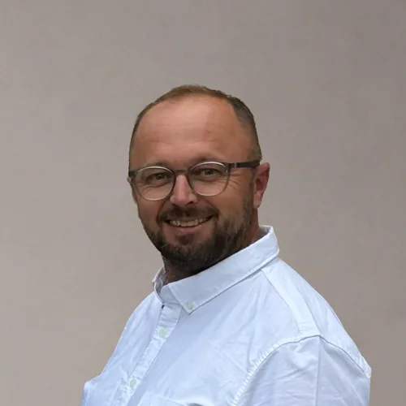
Petr Garček
oblastní zástupce
Rtyně je město, kde jsem vyrůstal a kde dnes trvale žiji se svou rodinou. Záleží mi na tom, jak se vyvíjí a kam směřuje. Věřím v poctivou, týmovou práci a otevřenou komunikaci mezi lidmi – bez nich se nedá budovat prostředí, ve kterém se dobře žije. Proto chci převzít zodpovědnost za podmínky, ve kterých budou vyrůstat a žít další generace. Rtyně má potenciál být místem, na které budeme hrdí, a já chci přispět k tomu, aby se tento potenciál naplno rozvíjel.
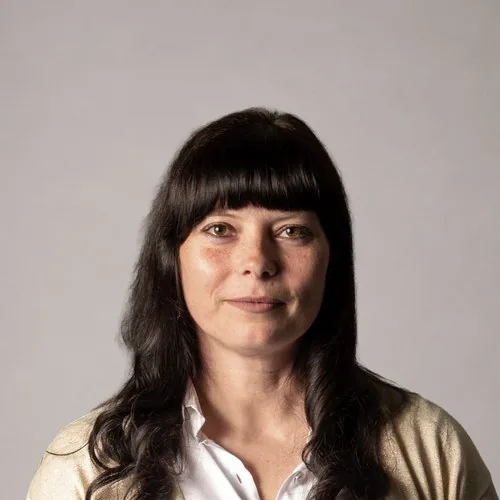
BcA. Ing. Petra Dědková
manažerka společnosti
Ve Rtyni žiji už osmým rokem, ale blízká mi byla vždy – jako bývalé mažoretce Koletovy hornické hudby. Po 18 letech v Praze jsem se do Rtyně vrátila založit rodinu a pokračovat v tom, čemu se věnuji celý život – vzdělávání, tanci a práci s lidmi. Vystudovala jsem VŠE v Praze a pedagogiku tance na HAMU. Od roku 2010 se věnuji tanečnímu vzdělávání a podílela jsem se na vybudování tanečního studia na Náměstí Míru v Praze. Ve Rtyni jsem založila pobočku Contemporary – prostor pro tanec a spolek Contemporary Region, abych i zde nabídla dětem i dospělým kvalitní taneční a volnočasové akivity.
Ráda pořádám kulturní a komunitní akce pro všechny generace a věřím, že živé město tvoří především lidé. Do budoucna bych chtěla přispět k tomu, aby Rtyně měla kvalitní pitnou vodu, dobré podmínky pro vzdělávání dětí a dostatečné zázemí pro místní spolky, komunitní a kulturní život. Důležitá je pro mě také otevřená komunikace a spolupráce města s místními spolky.
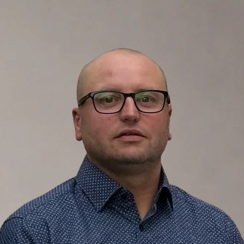
Lukáš Nývlt
vedoucí skladu
Jsem rodilý Rtyňák a téměř 30 let jsem aktivním členem SDH ve Rtyni v Podkrkonoší. Dobrovolná práce, pomoc lidem i organizace společenských akcí jsou pro mě přirozenou součástí života. Věřím, že naše město má velký potenciál. Chci přispět k tomu, aby se Rtyně dále rozvíjela jako moderní a dobře fungující město, které si zároveň zachová své tradice a přátelskou atmosféru.
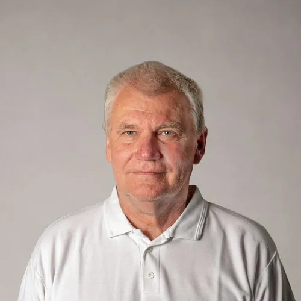
František Pěkný
jednatel společnosti
Ve Rtyni žiji od narození a za ta léta jsem měl možnost podílet se mimo jiné i na vybudování skládky. Po 32 letech se její provoz blíží ke konci a já bych rád přispěl k vybudování moderního zařízení pro třídění a likvidaci odpadů v souladu s novou legislativou. Chci se tak podílet na tom, aby naše město bylo čisté, dobře připravené do budoucna a šetrné k životnímu prostředí.
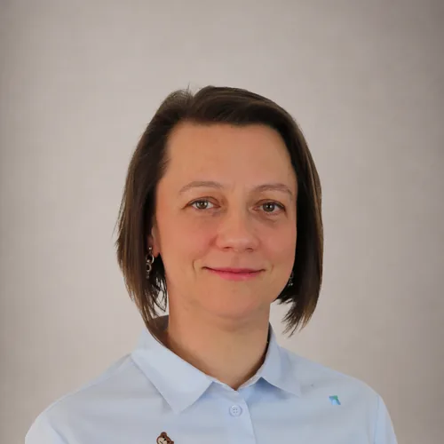
Katka Zwiefelhoferová
Doma jsem všude tam, kde mám svou rodinu. Nejvíc ale ve Rtyni. Je tu klid, pohoda, přátelé i sousedé, na které se můžu spolehnout. A právě proto bych si přála, aby Rtyně zůstala místem, kde se dobře žije i našim dětem a budoucím generacím.
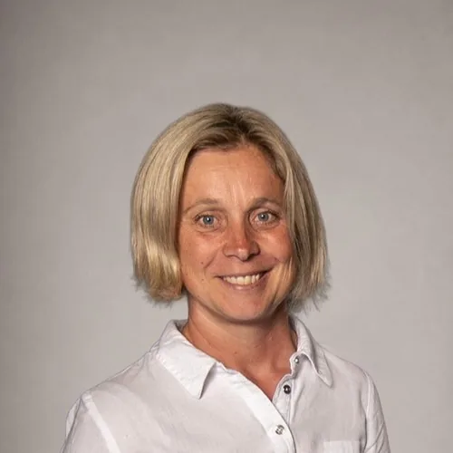
Mgr. Veronika Petříková
advokátka
Jsem advokátka, takže naslouchání, argumentace a hledání řešení jsou součástí mé práce. Jsem máma dvou dětí, takže umím vyjednávat i s těmi nejtvrdšími protivníky a také dobře vím, že trpělivost a schopnost domluvit se jsou k nezaplacení. A protože mám Rtyni opravdu ráda, kandiduji do zastupitelstva. Rtyně si zaslouží nový impuls a promyšlený rozvoj proto, aby byla ještě lepším místem pro život.
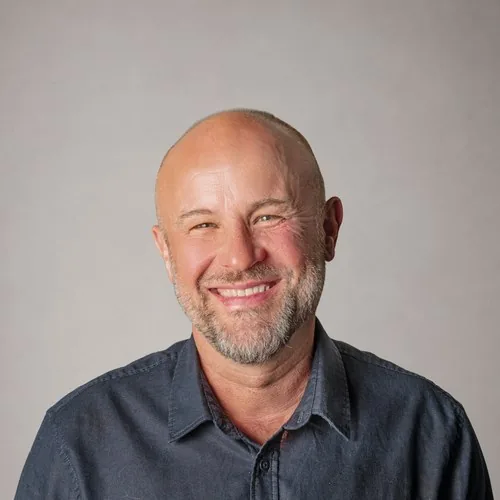
Aleš Jansa
živnostník
Ve Rtyni v Podkrkonoší žiji už téměř dvacet let a zapustil jsem zde své kořeny. Se svojí ženou jsme tu založili rodinu a vychovali tři děti. Původem pocházím z nedalekého Červeného Kostelce, ale Rtyni dnes považuji za svůj opravdový domov. Je to nádherné místo pro život, pevně však věřím, že její potenciál můžeme využít ještě mnohem lépe.
Celý svůj profesní život denně komunikuji s lidmi a hledám společná řešení i tam, kde to na první pohled vypadá nemožné. Umím vést konstruktivní dialog, nacházet optimální cíle a především dotahovat věci do konce. Rád bych své zkušenosti a energii věnoval rozvoji našeho města.
Pavla Náglová
státní zaměstnankyně
Když se řekne Rtyně, vybaví se mi hornická tradice, bohatá historie, typická zvonice, moje rodina a dobří přátelé. Nikdy mě neomrzí pohled na Krkonoše od benzinové pumpy nebo západ slunce z Náměrek. Právě to všechno společně je pro mě skutečným domovem. Přála bych si, aby si Rtyně zachovala svou klidnou a přátelskou atmosféru a nadále byla rozvíjejícím se místem, kde se bude dobře žít nám i našim dětem.
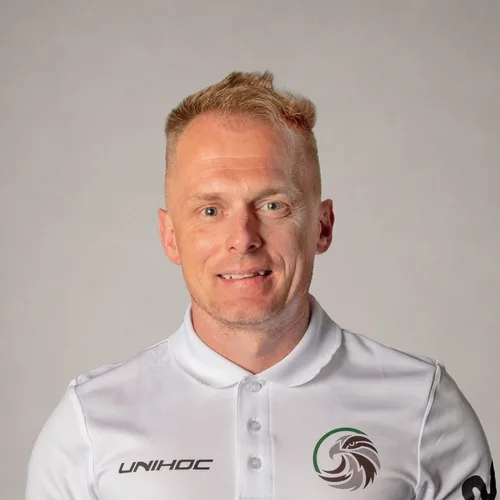
Miloslav Krýsl
živnostník
Celý život žiji ve Rtyni v Podkrkonoší. Na našem městě mi záleží, protože je mým domovem. Více než dvacet let jsem podnikal v oboru dřevostaveb. Tato práce mě naučila odpovědnosti, spolehlivosti a tomu, že dobré výsledky vznikají poctivou prací, ne sliby. Dnes většinu svého času věnuji rozvoji Orla jednota Rtyně, kde se společně s dalšími dobrovolníky snažíme vytvářet kvalitní podmínky pro sport, děti i společenský život.
Sport je součástí mého života stejně jako zdravý životní styl. Věřím, že aktivní lidé vytvářejí silnou komunitu a že město má podporovat nejen sport, ale i všechny, kteří věnují svůj čas druhým. Do komunální politiky kandiduji proto, že chci své zkušenosti využít pro další rozvoj Rtyně. Chci, aby naše město bylo dobře spravované, podporovalo spolkový život a bylo příjemným místem pro život současných i budoucích generací.
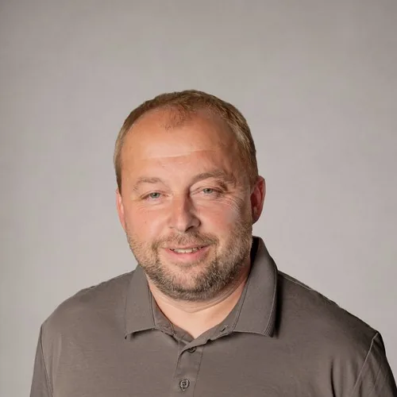
Aleš Bernard
obchodní manažer
Rtyně je pro mě opravdovým domovem. Rád bych přispěl k tomu, aby se dál rozvíjela a dobře se v ní žilo. Chci, aby měla naše Rtyně jasnou vizi do budoucna a zůstala bezpečným, klidným a příjemným místem pro nás všechny.
Ing. Dominik Sádlo
vedoucí technologie
Věřím, že silná budoucnost našeho města začíná u dětí. Chci podporovat kvalitní vzdělávání, pestrou nabídku volnočasových aktivit a lepší spolupráci mezi sportovními, kulturními i zájmovými spolky. Jen díky vzájemné koordinaci můžeme dětem nabídnout více příležitostí k rozvoji jejich talentů a zároveň posilovat komunitní život ve městě. Stejně důležitá je pro mě podpora spolků a organizací, které svou činností vytvářejí kulturní život, tradice a soudržnost našeho města.
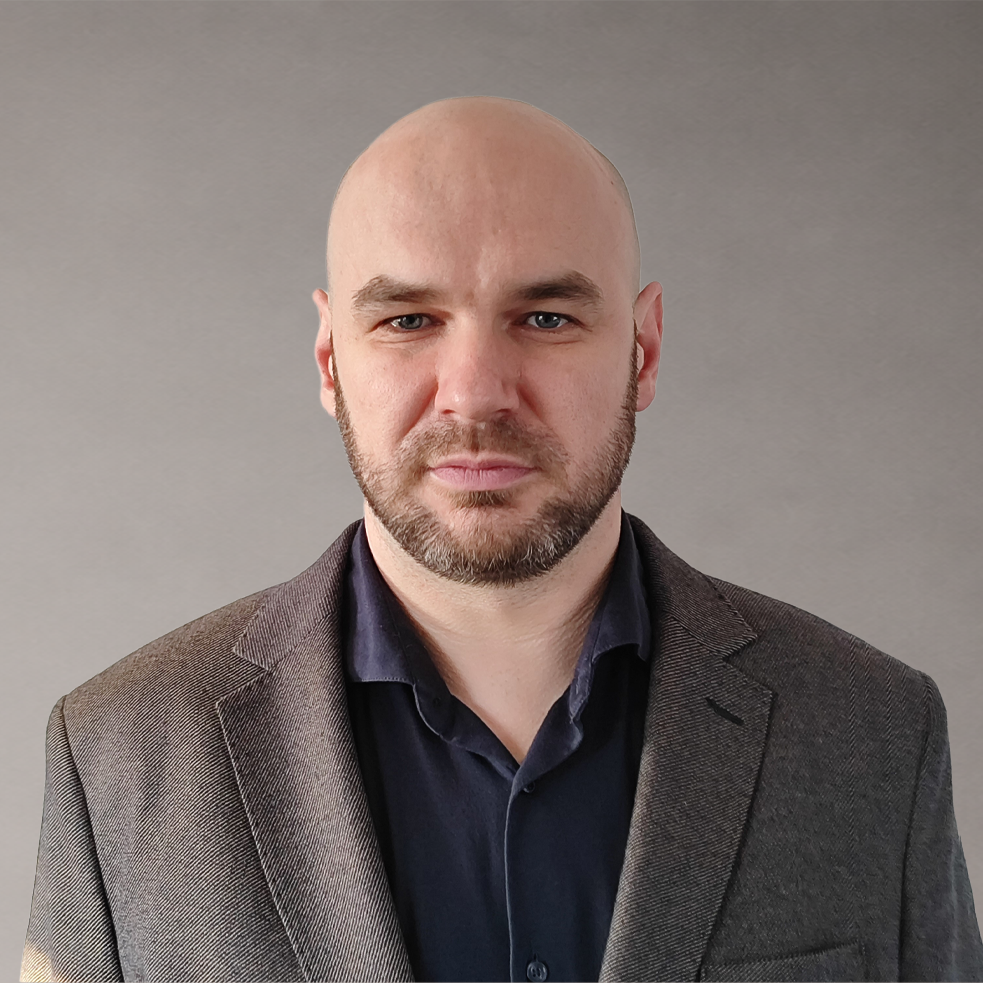
Bc. Jan Franěk
kontrolor projektů
Rtyně v Podkrkonoší je mým domovem od narození, a proto mi záleží na tom, jak se zde žije a jakým směrem se bude město dále rozvíjet. Během dvaceti let služby u Policie České republiky, včetně působení ve vedení obvodního oddělení, jsem získal zkušenosti s vedením lidí, řešením problémů a odpovědným rozhodováním. Dnes pracuji v Centru pro regionální rozvoj České republiky a své profesní zkušenosti chci nabídnout ve prospěch našeho města a jeho obyvatel.
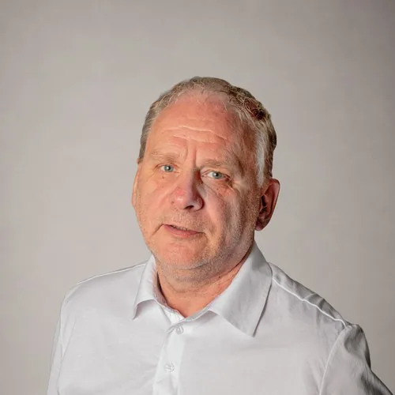
Roman Zwiefelhofer
jednatel společnosti
V roce 2010 jsem poznal malebné městečko Rtyně v Podkrkonoší, které se pro mě postupně stalo domovem. Oženil jsem se, založil nemalou rodinu a během let poznal mnoho skvělých lidí. Právě díky tomu jsem se rozhodl zapojit do veřejného života a přispět k tomu, aby se ve Rtyni dobře žilo i do budoucna.
Mgr. Hana Plašilová
učitelka ZŠ
Jsem učitelkou na 1. stupni ZŠ. Ve Rtyni žiji celý svůj život a chtěla bych, aby naše škola byla jedním z důvodů, proč se lidé do Rtyně stěhují, a ne odcházejí. Protože děti jsou budoucností našeho města.
Ing. Šárka Janatová
ekonomka
Rtyně v Podkrkonoší se stala mým domovem před 15 lety. Oceňuji krásnou přírodu v okolí města. Ráda rozvíjím sousedské a komunitní vztahy, které jsou pro mě základem spokojeného života v malém městě. Pro Rtyni si přeji dostatek stavebních parcel a podporu bohaté spolkové činnosti.
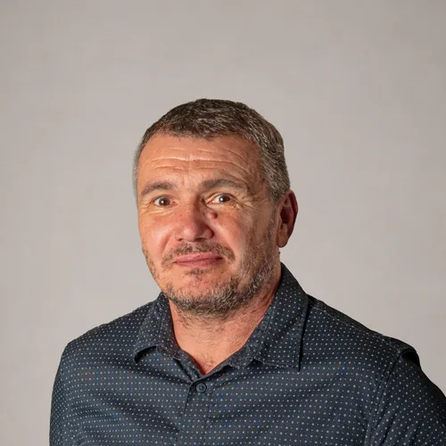
Dušan Brát
Ve Rtyni žiji od narození, mám dvě dospělé děti a dvě vnučky. Pracuji jako obchodní zástupce v oblasti recyklace odpadů. Od svých šesti let jsem aktivně hrál fotbal a dodnes se věnuji kopané jako funkcionář. Rád bych se podílel na zlepšení sportovišť a zázemí pro sport ve Rtyni, především na rekonstrukci fotbalových kabin. Ty by podle mě neměly sloužit jen fotbalistům, ale mohly by být využívány i dalšími sportovními oddíly a spolky v naší Rtyni.
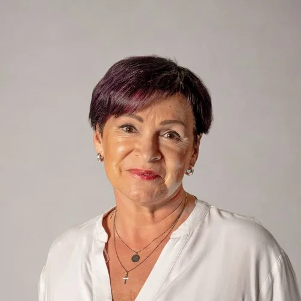
Iveta Nývltová
producentka
Více než 30 let pracuji pro lidi jako ředitelka TŠ Bonifác a organizátorka kulturních, vzdělávacích i komunitních projektů. Chci, aby městský úřad více naslouchal občanům, podporoval spolupráci a aktivní komunitní život. Mým cílem je přivádět do města dotace a vytvářet místo, kde se bude dobře žít dětem, rodinám, dospělým i seniorům.
Jsme tým sousedů, kterým není lhostejné, kde žijí. Společně chceme vytvořit lepší místo pro nás všechny.
Aktuality
Co právě děláme a řešíme.
Spouštíme dotazník
Nechceme tvořit program od stolu zavření v kanceláři. Dnes spouštíme dotazník a chceme slyšet, co vás ve Rtyni skutečně trápí...
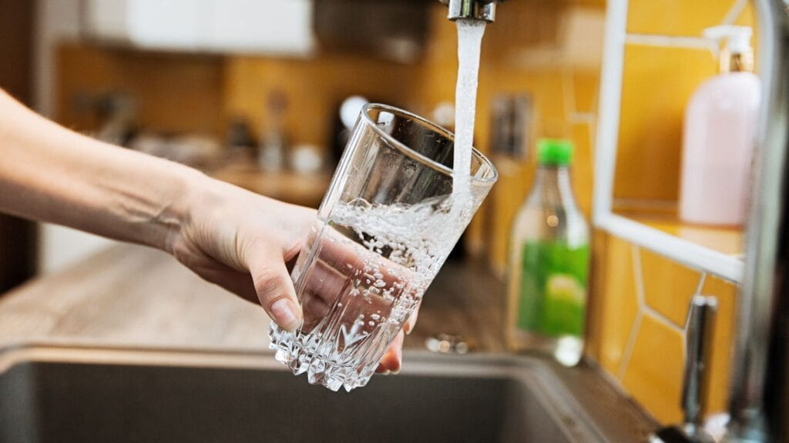
Problém s pitnou vodou
Dobrý den a ahoj, v dnešním příspěvku vás seznámíme s pohledem NAŠÍ RTYNĚ na téma, které vnímáme všichni jako naprosto klíčové - Kvalita pitné vody, zvýšený obsah dusičnanů. Právě toto téma bylo zásadní i v naší anketě. Je neoddiskutovatelné...
Amfiteátr Na Rychtě
V minulém příspěvku jsme se věnovali pitné vodě a jasně jsme popsali jednu z našich priorit pro další období. Dnes se podíváme na téma, které se dotýká kultury i architektury. Na místo s obrovským potenciálem, které by nám mohla závidět...
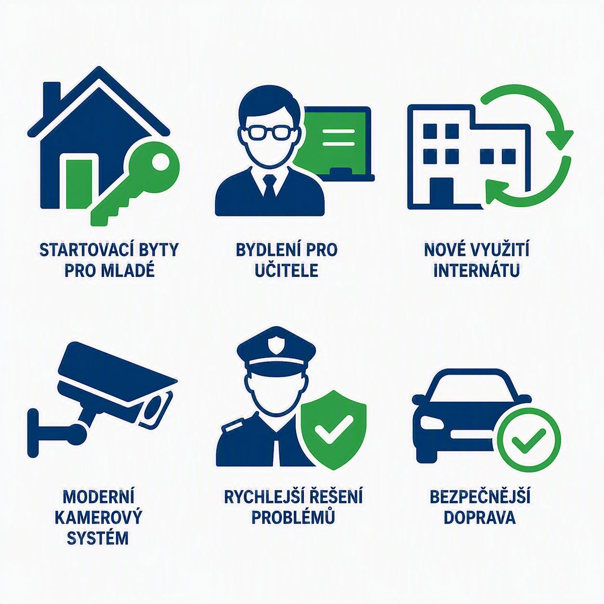
Krátce k bezpečnosti a bydlení
Poslední dobou rezonuje na sociálních sítích téma městské ubytovny - Horní Internát. Jsme přesvědčení, že takové zařízení je přežité a naše město ho nepotřebuje. Rtyně “schytala” na sociálních sítích negativní reklamu za svůj dlouhodobě pasivní přístup....
Sledujte nás živě
Nejrychlejší informace a každodenní dění z naší kampaně najdete na našem Facebooku.
Přejít na profilO nás
Cesta k letošním volbám.
-

Leden 2026
Vznik iniciativy
Skupina aktivních občanů Rtyně se sešla s myšlenkou posunout naše město dál. Začali jsme sbírat podněty od sousedů a přátel.
-

Březen 2026
Tvorba programu
Na základě vašich nápadů a našich diskusí sestavujeme volební program zaměřený na reálné potřeby obyvatel.
-

Květen 2026
Představení kandidátky
Máme plnou kandidátku odborníků a nadšenců, kteří jsou připraveni pracovat pro Rtyni.
-

Červenec 2026
Kampaň v ulicích
Vyrazíme za vámi do ulic, abychom prodiskutovali naše plány a vyslechli si vaše názory.
-
Přijďte
k volbám!Říjen 2026
Komunální volby
Naše Rtyně kandiduje do komunálních voleb.
Ke stažení
Všechny podrobnosti a volební materiály.
Volební program 2026
Kompletní program sdružení Naše Rtyně pro volební období 2026–2030
Čas do komunálních voleb
Komunální volby se konají 9. října 2026 v 14:00. Odpočet je zobrazen pouze vizuálně.
Kontaktujte nás
Máte dotaz nebo nápad? Napište nám.
Ozveme se vám co nejdříve.